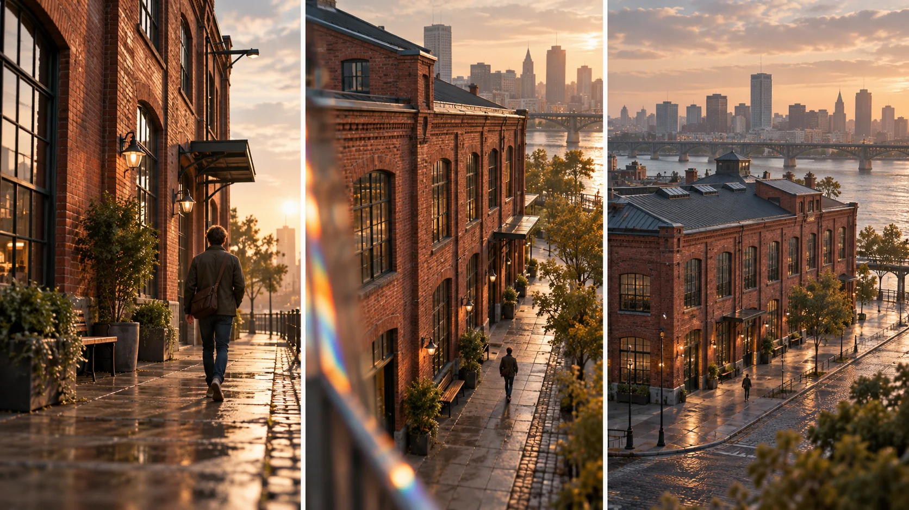

G04 · 고급 · 일반 드론
EROSION
색과 확산, 움직임의 질감을 나누고 현장 시간이 부족할 때 유지할 표현 요소를 정한다.
그림에서 확인할 세 가지지지 방식이 바뀌어도 표현 의도는 유지한다.
1인물과 벽의 가까운 관계
왼쪽은 벽돌 건물 앞 인물의 뒷모습과 따뜻한 반사가 크게 보인다. 장소 전체보다 인물이 있는 표면과 분위기가 먼저 읽히는지 살핀다.
2높아진 관점의 인물
가운데는 인물이 작아지고 건물 측면이 더 넓게 드러난다. 시점이 바뀌어도 벽돌의 따뜻한 색과 빛의 확산이 연결되는지 비교한다.
3건물 밖으로 열린 배경
오른쪽은 건물 지붕과 강, 도시의 다리가 함께 보인다. 가까운 인물 장면에는 없던 위치 정보가 추가되면서 같은 장소로 읽히는 단서를 찾는다.
촬영 설계
촬영을 이렇게 설계한다
시대별 룩을 설계한다
제작자는 과거에 강한 확산과 프리즘을, 현재에는 줄인 효과를, 미래에는 깨끗한 이미지를 계획했다. 효과의 양이 장식이 아니라 도시를 바라보는 관점과 연결된 것이다.
확보할 컷을 우선한다
처음에는 시대별로 핸드헬드·짐벌·삼각대와 달리를 나눴지만 충분한 커버리지를 위해 짐벌 사용을 늘렸다. 현장의 시간 제약이 지지 방식의 계획을 수정한 구체적 이유다.
교육 적용 · 유지 조건을 적는다
지지 방식을 바꾸더라도 남겨야 할 색, 확산, 인물과 공간의 관계를 정한다. 같은 위치를 고집해 필요한 컷을 놓치는 경우와 룩이 흐트러지는 경우를 비교해 대안을 선택한다.
뉴욕의 과거·현재·미래를 춤과 도시 공간의 변화로 표현하려 한 스타일 중심 단편이다.
원본 영상EROSION
1. 룩의 연결
벽의 색과 밝기, 공기의 확산감을 비교한다. 시점 변화와 표현의 불연속을 같은 현상으로 보지 않는다.
2. 컷의 역할
인물 행동과 장소 설명 중 각 컷이 맡은 정보를 찾는다. 비슷한 컷을 반복 확보하는지 판단한다.
3. 계획의 수정
대체 컷이 추가로 제공하는 정보를 본다. 장비 선택을 바꿔도 이야기의 핵심이 남는지 확인한다.
재생이 제한되면 원본 영상 새 창을 이용하세요.
제작진 설명 · 한국어 요약 번역
작품의 시각 언어에 맞춰 촬영 방식을 조정하다
시대별 룩
Sessler는 과거·현재·미래의 룩을 필터와 지지 방식으로 나누었다고 설명한다.
과거는 Smoque 2·3 필터로 번진 질감을, 현재는 Smoque 1을 썼다.
미래는 필터 없이 깨끗하게 두었다.
현장 변경
계획은 과거 핸드헬드, 현재 MoVI, 미래 삼각대와 달리였다.
그러나 필요한 커버리지를 빠르게 얻으려면 이동이 빨라야 해서 MoVI가 대부분을 맡았다.
결과
마지막 숏은 매우 안정적으로 구도가 잡혔다고 한다.
제작진 설명 · 한국어 요약 번역
드론이 드러나지 않도록 광학 기법을 맞췄다
드론 숏
상부 장착 드론 숏은 Freefly ALTA로 찍었고 NOSTALGIA 단편에서 영감을 얻었다.
얕은 심도와 프리즘 기법을 적용해 드론 영상처럼 보이지 않게 했다.
광학 기법
렌즈 앞 프리즘과 디옵터는 화면을 완전히 왜곡하지 않고 몽환적인 층을 더했다.
연출 의도
목표는 드론의 존재를 과시하기보다 불가능했을 이동을 얻는 것이었다.
스태프는 최소 인원이었고 양식화된 룩을 지향했다고 쓴다.
Kling 프롬프트단문 인과 체인 · 16:9
내가 직접 만들어 본다
카메라 시점이 바뀌어도 벽돌의 따뜻한 색과 번진 빛은 유지하고 새 위치 정보만 더해지도록 지시한다.
- S01벽돌 건물 앞에 한 사람이 뒤돌아 서 있다.
- S02영상은 하나의 연속 쇼트다.
- S03화면에 드론 기체는 나오지 않는다.
- S04처음 10초 동안 카메라는 사람과 벽 가까이에서 시작한다.
- S05따뜻한 벽돌색이 부드럽게 번진 빛 속에 있다.
- S06다음 10초 동안 카메라는 천천히 위로 떠오른다.
- S07카메라가 떠오르자 사람은 작아지고 건물 측면이 넓어진다.
- S08시점이 바뀌어도 벽돌의 따뜻한 색과 번진 빛은 이어진다.
- S09그래서 두 시점이 같은 장소의 같은 분위기로 읽힌다.
- S10마지막 10초 동안 카메라는 지붕 너머로 올라선다.
- S11지붕 너머로 강과 다리가 나타난다.
- S12새로 생긴 위치 정보는 이 장소가 도시의 어디인지 알려 준다.
- S13사람은 끝까지 화면 안에 남는다.
[네거티브]
- 벽돌 건물이 유리 건물로 바뀌는 것 금지
- 장면이 여러 컷으로 나뉘어 끊기는 것 금지
- 화면에 드론 기체가 나타나는 것 금지
- 처음부터 도시 전체가 넓게 보이는 것 금지
- 벽돌색이 차갑고 선명한 색으로 바뀌는 것 금지
- 카메라가 위가 아니라 옆으로 크게 도는 것 금지
- 사람이 커지고 건물이 좁게 보이는 것 금지
- 올라가며 벽돌색과 빛이 갑자기 달라지는 것 금지
- 앞뒤 시점이 서로 다른 장소처럼 보이는 것 금지
- 카메라가 지붕에 가려 시야를 잃는 것 금지
- 강과 다리가 건물 앞쪽에 겹쳐 나오는 것 금지
- 새 풍경이 사람의 존재감을 지워 버리는 것 금지
- 사람이 화면 밖으로 사라지는 것 금지
결과에서 볼 것
- 시점이 올라가도 벽돌의 따뜻한 색과 번진 빛이 이어졌는가
- 가까운 장면에 없던 강과 다리가 위치 정보를 더했는가
- 두 시점이 같은 장소의 같은 분위기로 읽혔는가